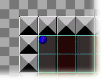

Tutorial
Page 14 of 15
Final Polish - Control
The final thing we are going to add to the game is a controller object. Many games have special objects with no sprites assigned to them that are used to control elements of the game that are not
directly related to the gameplay. In this case, our controller will show the score and play some background music.
First lets add some music to the resources for the game:
- From the Resources drop down menu, choose Create Sound, which will open a new Sound Properties window. Click on the Name field and rename it to snd_music.
- Click on the Load Sound button, navigate to the Resources folder and select the sound file music.mp3.
- Press the OK button to close the window.
Now create a new object by opening the Resources drop down menu and selecting Create Object. Give this object the name "obj_Control" and add a Create Event to it. in
this create event, drag a play Sound action into it and for a sound indicate "snd_music" and set Loop to true because we want the music to repeat itself forever.
We want to display the player score with this object too, so you need to add a Draw Event to your object. In this Draw Event you should go to the Score tab and drag the Draw Score
action.
The position for drawing the score is defined by the x and y values that you input here, so set them both to 64, and leave the "Caption" as it is, since it is the score we are showing and not some other value.
The last thing we need to do is to add this object into the room, so double click the game room to open it again a,d then in the Objects tab, select "obj_Control" and place it in the room anywhere. Since the object
does not have a sprite, you will see that GameMaker shows you it's position with a little blue ball marker with a question mark. this will not be shown in the game and is only there as a reminder to you that you have
placed a sprite-less instance in the room.

Run the game now and see how everything works together!
Click on the Next button to go to the next page of the tutorial.